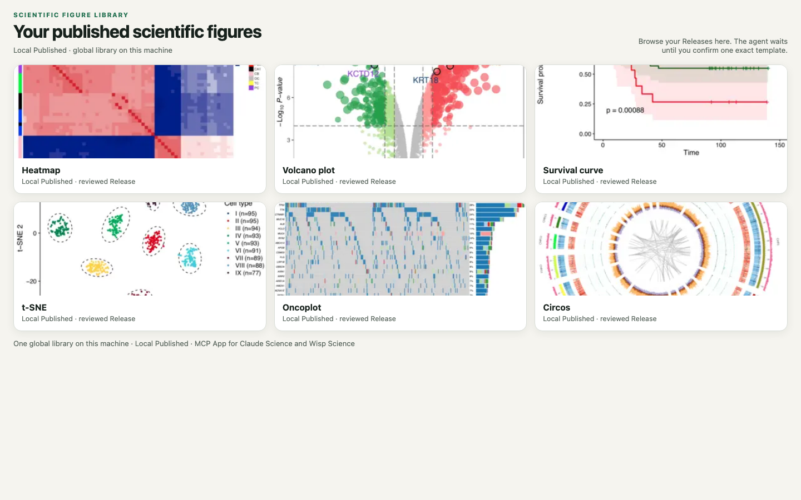

本机全局 Library
目录由你指定。不会悄悄写进当前项目。备份这份磁盘目录即可带走全部 Release。
Local first · MCP App · Claude Science · Wisp Science
导入图和代码，审阅后发布成不可变 Release。一份全局 Library 跨项目复用。服务器不执行绘图脚本。可选外部目录只是补充，权威始终是 Local Published。

在 MCP App 里浏览本机已发布模板，确认后再物化到项目。
Features
目录由你指定。不会悄悄写进当前项目。备份这份磁盘目录即可带走全部 Release。
图与代码分开记录。作图是否跑过、上游流程、科学判断是三件独立的事。
预览、确认、plan、apply。只有你点过的那一张会进项目，不会整库下载。
Install
| Tool | |
|---|---|
figure_library_plan_bind_global | 选择本机 Library 目录 |
figure_library_open | 打开 MCP App |
figure_library_search | 检索 Local Published |
figure_library_plan_publish_working_revision | 发布 Release |